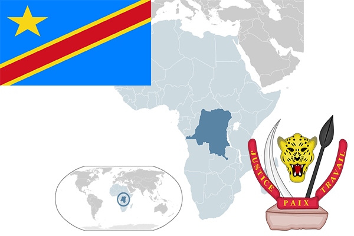

To`liq nomi: Kongo Demokratik Respublikasi
Region: Markaziy Afrika
Qonunchilik shakli: Respublika
Mustaqillik kuni : 30-iyun 1960-yil (Belgiyadan)
Poytaxt: Kinshasa
Maydoni: 2 345 410 km² (dunyoda 11-o`rinda )
Chegaradosh davlatlari: Markaziy Afrika Respublikasi, Sudan, Uganda, Ruanda, Burundi, Tanzaniya, Zambiya, Angola
Aholisi: 77 433 744 (dunyoda 19 -o`rinda, 2014 -yil roʻyxat)
Aholi zichligi: 28 /km²
Aholining o`rtacha yoshi: 57,25 yil ( 59,5 ayollar, 55,0 erkaklar)
Rasmiy tili: Fransuz tili
Dini: 50% xristian, 40% mahalliy dinlar, 3% musulmonlar
Pul birligi: Kongo franki
Telefon prefiksi: +243
Internet domen: .cd
Xalqaro tashkilotlarga a`zoligi: BMT (1960 – yildan)
Dengiz va okeanlarga chiqishi: Atlantika okeani
YIM: Butun: $ 57,8 mlrd, Jon boshiga: $ 704 (2016 - yil roʻyxati)
Yirik shaharlari: Kinshasa, Mbuji-Mayi, Lubumbashi, Kisangani, Bukavu, Matadi